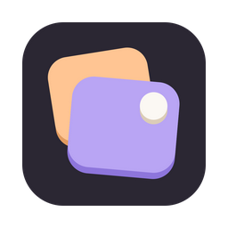

Scrawl
Draw on anything.

Two small tools for your Mac. Scrawl draws on your screen. Away blurs it while you’re gone.
Install with one command Recommended
curl -fsSL https://hfang1012.github.io/Mac-Overlay-Draw/install.sh | sh
Open Terminal (⌘ Space, type “Terminal”), paste, press Return. No security prompt, and running it again updates Pane.
For Macs with Apple silicon. Free and open source.
Draw on anything.
Blur your screen while you’re gone.
Switch tools from the button in the corner of Pane’s window. Change the keys and your message there too.
Two ways in. The Terminal one is quicker.
Downloads Pane, puts it in Applications and opens it.
curl -fsSL https://hfang1012.github.io/Mac-Overlay-Draw/install.sh | sh
curl, so macOS opens Pane straight away. Run the same command any time to update. Had Scrawl before? It replaces the old app and keeps your drawings.Works fine, but macOS asks you to confirm once.
Scrawl needs this to notice when you hold its keys. Away works without it.